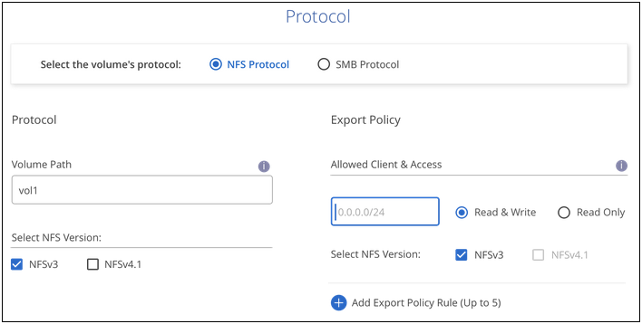

Richiedi modifiche alla documentazione
Richiedi modifiche alla documentazione Modifica questa pagina
Modifica questa pagina Scopri come collaborare
Scopri come collaborareCreare e montare volumi
Collaboratori
BlueXP ti consente di creare volumi cloud in base al tuo abbonamento a Cloud Volumes Service per Google Cloud. Dopo aver creato un volume, ottenere i relativi comandi di montaggio in modo da poter montare il volume su un client.
Creare volumi
È possibile creare volumi NFS o SMB in un account Cloud Volumes Service per Google Cloud nuovo o esistente. I volumi cloud attualmente supportano NFSv3 e NFSv4.1 per client Linux e UNIX e SMB 3.x per client Windows.
-
Se si desidera utilizzare SMB in GCP, è necessario aver configurato DNS e Active Directory.
-
Quando si intende creare un volume SMB, è necessario disporre di un server Windows Active Directory a cui connettersi. Queste informazioni verranno inserite durante la creazione del volume. Inoltre, assicurarsi che l’utente Admin sia in grado di creare un account macchina nel percorso dell’unità organizzativa (OU) specificato.
-
Selezionare l’ambiente di lavoro e fare clic su Add New Volume (Aggiungi nuovo volume).
-
Nella pagina Details & Location (Dettagli e posizione), immettere i dettagli relativi al volume:
-
Immettere un nome per il volume.
-
Specificare una dimensione compresa tra 1 TIB (1024 GiB) e 100 TIB.
-
Specificare un livello di servizio: Standard, Premium o Extreme.
-
Selezionare l’area di Google Cloud.
-
Selezionare la rete VPC da cui sarà possibile accedere al volume. Tenere presente che non è possibile modificare o modificare il VPC dopo la creazione del volume.
-
Fare clic su continua.

-
-
Nella pagina Protocol (protocollo), selezionare NFS o SMB, quindi definire i dettagli. Le voci richieste per NFS e SMB sono illustrate in sezioni separate di seguito.
-
Per NFS:
-
Nel campo Volume Path (percorso volume), specificare il nome dell’esportazione del volume che verrà visualizzato quando si monta il volume.
-
Selezionare NFSv3, NFSv4.1 o entrambi a seconda delle proprie esigenze.
-
Facoltativamente, è possibile creare una policy di esportazione per identificare i client che possono accedere al volume. Specificare:
-
Client consentiti utilizzando un indirizzo IP o CIDR (Classless Inter-Domain Routing).
-
Diritti di accesso in lettura e scrittura o in sola lettura.
-
Protocollo di accesso (o protocolli se il volume consente l’accesso NFSv3 e NFSv4.1) utilizzato per gli utenti.
-
Fare clic su + Add Export Policy Rule (Aggiungi regola policy di esportazione) se si desidera definire ulteriori regole dei criteri di esportazione.
La seguente immagine mostra la pagina Volume compilata per il protocollo NFS:
-

-
-
Per PMI:
-
Nel campo Volume Path (percorso volume), specificare il nome dell’esportazione del volume che verrà visualizzato quando si monta il volume e fare clic su Continue (continua).
-
Se Active Directory è stato configurato, viene visualizzata la configurazione. Se si tratta del primo volume da configurare e non è stata configurata alcuna Active Directory, è possibile attivare la crittografia della sessione SMB nella pagina SMB Connectivity Setup:
Campo Descrizione Indirizzo IP primario DNS
Gli indirizzi IP dei server DNS che forniscono la risoluzione dei nomi per il server SMB. Utilizzare una virgola per separare gli indirizzi IP quando si fa riferimento a più server, ad esempio 172.31.25.223, 172.31.2.74.
Dominio Active Directory da unire
L’FQDN del dominio Active Directory (ad) a cui si desidera che il server SMB si unisca.
Nome NetBIOS del server SMB
Un nome NetBIOS per il server SMB che verrà creato.
Credenziali autorizzate per l’accesso al dominio
Il nome e la password di un account Windows con privilegi sufficienti per aggiungere computer all’unità organizzativa (OU) specificata nel dominio ad.
Unità organizzativa
L’unità organizzativa all’interno del dominio ad da associare al server SMB. L’impostazione predefinita è CN=computer per le connessioni al proprio server Windows Active Directory.
La seguente immagine mostra la pagina Volume compilata per il protocollo SMB:

-
-
Fare clic su continua.
-
Se si desidera creare il volume in base a uno snapshot di un volume esistente, selezionare lo snapshot dall’elenco a discesa Snapshot Name (Nome snapshot). In caso contrario, fare clic su continua.
-
Nella pagina Snapshot Policy, è possibile abilitare Cloud Volumes Service per creare copie Snapshot dei volumi in base a una pianificazione. È possibile eseguire questa operazione spostando il selettore verso destra oppure modificare il volume in un secondo momento per definire il criterio di snapshot.
Scopri come "creare un criterio di snapshot".
-
Fare clic su Add Volume (Aggiungi volume).
Il nuovo volume viene aggiunto all’ambiente di lavoro.
Continuare con il montaggio del volume cloud.
Montare volumi cloud
Accedi alle istruzioni di montaggio da BlueXP per montare il volume su un host.

|
Utilizzare il protocollo/dialetto evidenziato supportato dal client. |
-
Aprire l’ambiente di lavoro.
-
Passare il mouse sul volume e fare clic su montare il volume.
I volumi NFS e SMB visualizzano le istruzioni di montaggio per quel protocollo.
-
Passare il mouse sui comandi e copiarli negli Appunti per semplificare questo processo. Basta aggiungere la directory di destinazione/punto di montaggio alla fine del comando.
Esempio NFS:

La dimensione i/o massima definita da
rsizee.wsizeoptions è 1048576, tuttavia 65536 è l’impostazione predefinita consigliata per la maggior parte dei casi di utilizzo.Si noti che i client Linux imposteranno per impostazione predefinita NFSv4.1, a meno che la versione non sia specificata con
vers=<nfs_version>opzione.Esempio SMB:

-
Mappare l’unità di rete seguendo le istruzioni di montaggio dell’istanza.
Dopo aver completato i passaggi delle istruzioni di montaggio, il volume cloud è stato montato correttamente sull’istanza GCP.